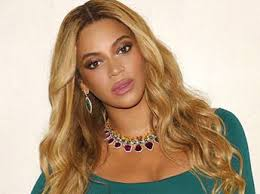

BIOWIKI

beyonce
Métiers Actrice, Chanteur, Compositeur plus Nom de naissance Beyoncé Giselle Knowles-Carter Nationalité Américaine Naissance 4 septembre 1981 (Houston, Texas - Etats-Unis) Age 37 ans
Composant avec les chanteuses Kelly Rowland et Michelle Williams le trio R&B Destiny's Child, Beyoncé Knowles enchaîne avec son groupe les tubes à partir de 1997 : Say my name, Survivor, Independant women (titre-phare de la BO de Charlie et ses drôles de dames) pour ne citer que ceux-là. La frontière entre musique et cinéma étant mince, la pulpeuse artiste la franchit aisément pour devenir en 2002 Foxxy Cleopatra, la nouvelle muse du célèbre agent libidineux dans Austin Powers dans Goldmember, film pour lequel elle interprète de nombreux titres, notamment Work it out. Entre une carrière solo (Crazy in love) et un dernier album avec les Destiny's Child (Fulfilled en 2004), la belle se trouve quelques rôles en rapport avec son métier d'artiste musicale : chanteuse de jazz convertie au gospel dans The Fighting temptations (2003) et pop star dans La Panthère Rose (2005), elle interprète en 2006 Dreamgirls, un film s'inspirant de l'histoire du groupe Motown Diana Ross & The Supremes. Après quelques rôles dans des films peu connus, comme Cadillac Records (2009) ou Obsessed (id.), la chanteuse se tourne vers l'animation et prête sa voix au personnage de la Reine Tara dans le nouveau film des studios Blue Sky, Epic : la bataille du royaume secret (2013). Cette même année, elle est également créditée au casting de The great Gatsby en tant qu'interprète sur la chanson "Back to black".